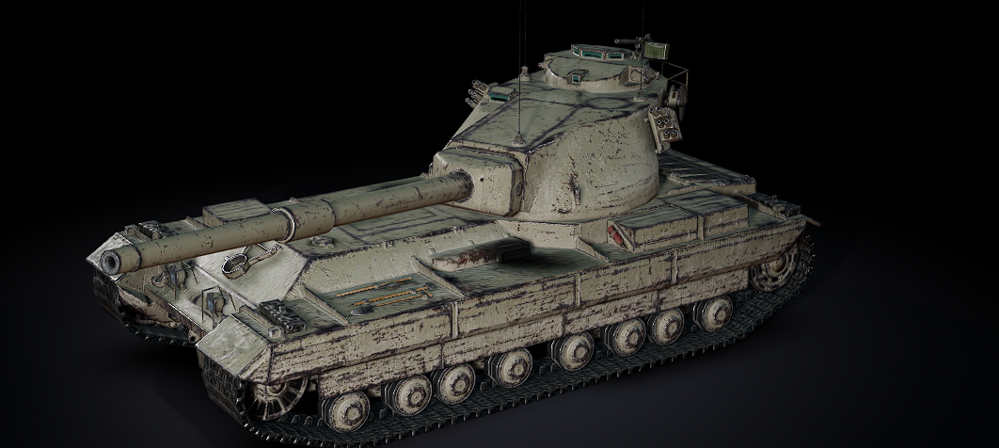
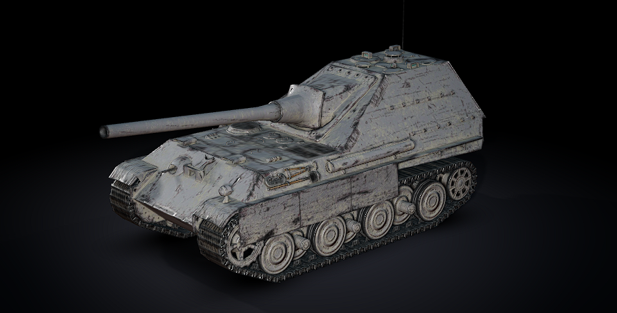
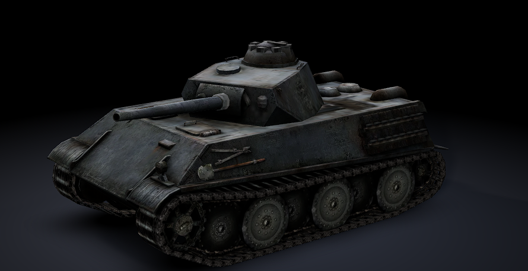
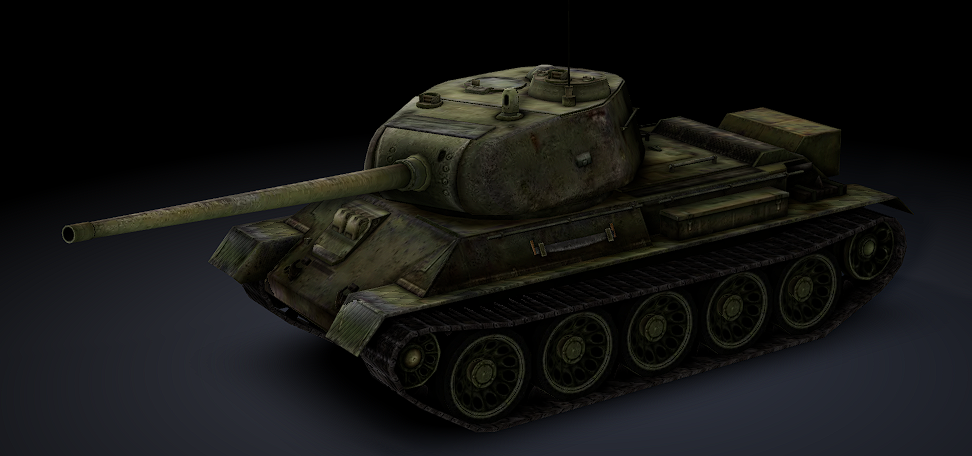
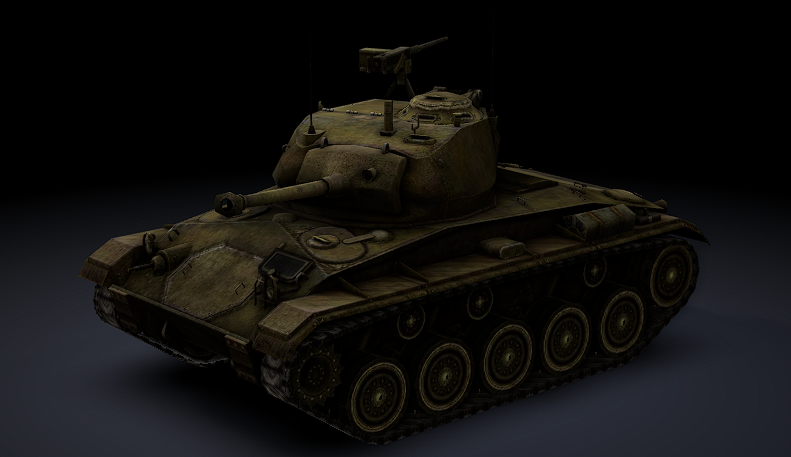

Blitz Facts and Tips
More detailed facts and combat tips for the World of Tanks Blitz tanks in my garage:
the FV215b, Jagdpanther II, VK 28.01, T-43, and M24 Chaffee.

FV215b
Tier X British Heavy Tank
Facts
- It is often called a "Heavium" tank. It mixes some of the speed and handling of a medium tank with the armor of a heavy.
- It is known for its large, strong turret and for dealing serious damage for a heavy tank.
- Its weak spot is the lower front plate of the hull, and the fuel tanks at the front make it prone to fires.
- It is a very different tank from the FV215b (183), which is a tank destroyer.
Combat Tips
- Use its good mobility to stay close to friendly medium tanks and help them when they brawl.
- It also works well as a second-line heavy, supporting your front-line tanks from behind them.
- Use the turret to take shots while keeping your hull covered. Don't show the lower front plate.
- Equipping CO2 tanks (or another fire-prevention option) is a smart choice because of the fire risk.
- Short flanking moves to help your teammates are better than long drives away from the team.

Jagdpanther II
Tier VIII German Tank Destroyer
Facts
- It is a casemate tank destroyer, so the gun is mounted in the hull and cannot rotate in a turret.
- The long gun is built for fighting at range and punching through armor.
- Because the gun is fixed in the hull, you have to turn the whole tank to aim at sideways targets.
Combat Tips
- Pick a spot with good cover and a clear view, and let the enemy come to you instead of rushing.
- Shoot, then move or reposition before the enemy can shoot back at your location.
- Stay next to a teammate or a wall so enemies can't get easy side shots on you.
- Aim for weak points like the lower hull or gun mantlets on heavier targets.
- Be careful with fast tanks that get close. You can't turn quickly to fight them.

VK 28.01
Tier VI German Light Tank
Facts
- In Blitz it is considered the most heavily armored tank among the tier VI light tanks.
- It carries a 105 mm howitzer, which uses high-explosive (HE) shells. That gun can damage almost any tank it hits and can sometimes break tracks.
- It is fairly large for a light tank and loses a lot of speed when it turns.
- It leads on to the Spähpanzer SP I C in the research tree.
Combat Tips
- It can scout early in the match and then switch to second-line support like a medium tank.
- The howitzer shell is slow and not very accurate, so shoot at targets that are close or not moving.
- It is good against lightly armored targets and for forcing enemies off a base capture.
- Its gun can only aim downward a lot at the sides, so use hills and cover carefully.
- Don't try to out-turn faster tanks. Keep moving forward and plan your routes.

T-43
Tier VII Soviet Medium Tank
Facts
- It is a well-rounded medium tank that grew out of the famous T-34 design.
- Soviet medium tanks in general are known for solid turrets and a good ability to aim the gun downward.
- It has a long gun that is reliable at medium and long distances.
Combat Tips
- Mediums are great at flanking. Take a flank route with your team and not alone.
- Use hills and ridges so only your turret is visible when shooting.
- Keep your hull angled and don't show your full side to heavier enemies.
- Move to a new position after a few shots so enemies can't predict where you are.
- Stay mobile and help your allies by shooting enemies that are fighting someone else.

M24 Chaffee
Tier V American Light Tank
Facts
- It is a fast, small light tank built for scouting and hit-and-run attacks.
- Its armor is very thin, so its main defenses are speed and staying out of sight.
- It has a quick-firing gun, which lets it make up for low damage per shot.
Combat Tips
- Use bushes and its small size to stay hidden while you spot enemies for your team.
- Don't fight head-on with heavier tanks. Look for side and rear shots.
- Keep moving. A stopped light tank is an easy target.
- Spot first, then shoot. Telling your team where the enemy is can be worth more than your own damage.
- Retreat to a safe spot to recover if you get spotted by many enemies.
Note: tank stats and balance can change when the game updates, so check your garage in game for the most current numbers.